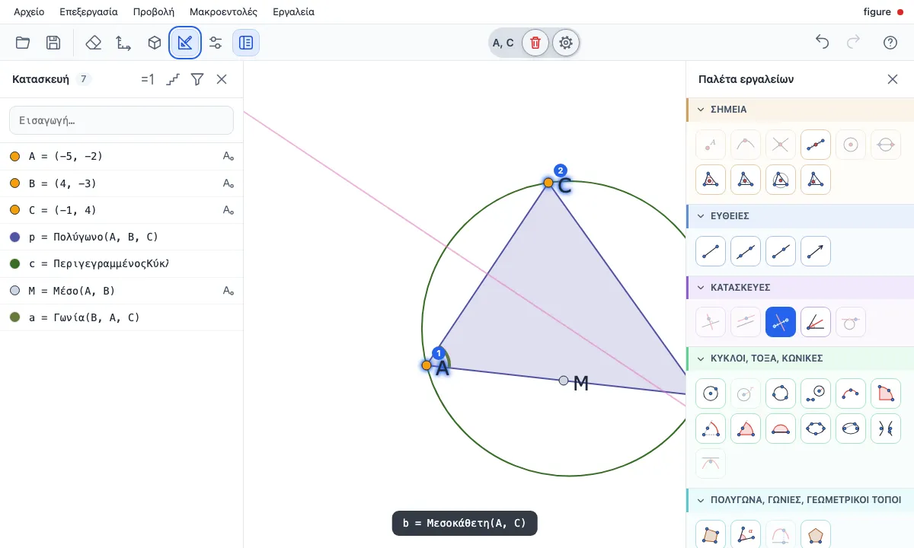
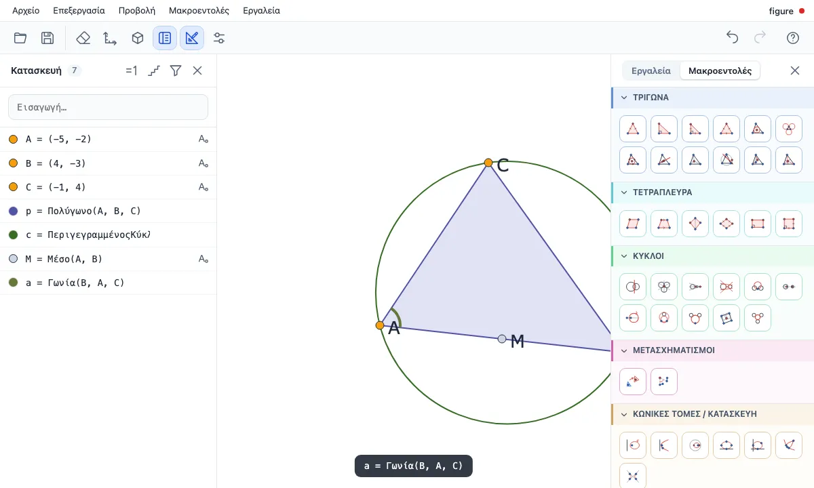
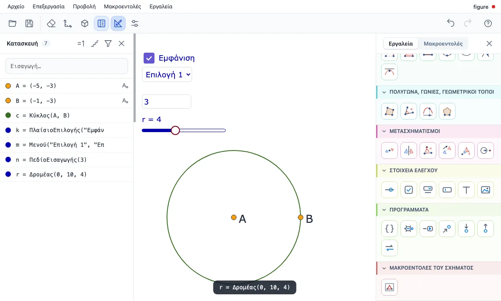

Η παλέτα εργαλείων

Άνοιγμα της παλέτας
- Το της γραμμής, ή Προβολή › Παλέτα εργαλείων, ανοίγει δεξιά όλα τα εργαλεία, όλα ορατά, ανά οικογένειες με τα χρώματα του δακτυλίου, και τελευταίες τις μακροεντολές του σχήματος.
- Στο πάνω μέρος του πίνακα, δύο καρτέλες: Εργαλεία και Μακροεντολές (εκτός DocTools). Το DocGeo θυμάται την επιλεγμένη.
- Η καρτέλα Μακροεντολές δείχνει τις Οι μακροεντολές μου και μετά τη βιβλιοθήκη, μία ζώνη ανά φάκελο, κάθε ενότητα με το χρώμα της. Όπως τα εργαλεία, οι μακροεντολές είναι εκεί απενεργοποιημένες και εξηγούνται στην υπόδειξη. Μια επιλεγμένη μακροεντολή αντιγράφεται στο σχήμα και περνά στη ζώνη Μακροεντολές του σχήματος της καρτέλας Εργαλεία.
- Η παλέτα είναι ορατή κατά την πρώτη εκκίνηση. Στη συνέχεια, αυτό το πρόγραμμα περιήγησης θυμάται αν είναι ανοιχτή ή κλειστή για τις επόμενες εκκινήσεις.
- Καταλαμβάνει τη θέση του πλαισίου ιδιοτήτων: το άνοιγμα του ενός κλείνει το άλλο, χωρίς να αφήνεται το ενεργό εργαλείο.
- Ένα δεξί κλικ σε αντικείμενο ανοίγει τις ιδιότητές του στη θέση της παλέτας· με το κλείσιμό τους, η παλέτα επιστρέφει.
- Ένα κλικ στον τίτλο μιας οικογένειας τη συμπτύσσει ή την αναπτύσσει· το DocGeo το θυμάται.
- Το Esc αφήνει το εργαλείο ή την επιλογή, έπειτα κλείνει την παλέτα.
- Σε μικρή οθόνη, η παλέτα καλύπτει το σχήμα και κλείνει μόλις επιλεγεί εργαλείο. Κάτω από 500 px πλάτος, το κουμπί της μεταφέρεται από τη γραμμή στα δεξιά της γραμμής εισαγωγής.

Κατασκευή με ένα εργαλείο
- Ένα κλικ σε ένα εργαλείο το επιλέγει· όταν είναι πατημένο, ένα νέο κλικ το αφήνει.
- Η παλέτα περιέχει όλα τα εργαλεία του δακτυλίου και επιπλέον άλλα (σήμα δακτύλιος παρακάτω). Οι οικογένειες Επίπεδα και Στερεά και τα εργαλεία με σήμα 3D εμφανίζονται μόνο στην προβολή 3D.
- Η οικογένεια Στοιχεία ελέγχου, εκτός δακτυλίου, τοποθετεί δρομείς, πλαίσια επιλογής, μενού, πεδία εισαγωγής, κείμενα και εικόνες.
- Η οικογένεια Προγράμματα, που δεν υπάρχει στον δακτύλιο, δημιουργεί χελώνες, κουμπιά και προγράμματα συμβάντων (βλ. Μπλοκ και χελώνα).
- Με ανοιχτή την παλέτα, ένα κλικ σε αντικείμενο το επιλέγει χωρίς να ανοίξει δακτύλιο, και ένα κλικ σε κενό σημείο αναιρεί την επιλογή. Τα εργαλεία που δεν δέχονται το αντικείμενο, ή την πολλαπλή επιλογή, είναι απενεργοποιημένα.
- Με ανοιχτή την παλέτα και χωρίς εργαλείο, μπορείτε μόνο να χειριστείτε το σχήμα: ένα κλικ σε κενό σημείο ή σε διασταύρωση δεν δημιουργεί σημείο. Για να δημιουργήσετε ένα, πάρτε το εργαλείο Σημείο, το πρώτο της παλέτας.
- Όταν ο δείκτης περνά πάνω από ένα εργαλείο, η υπόδειξη δείχνει τη γραμμή του. Αν του αρκούν τα επιλεγμένα αντικείμενα, το αντικείμενο που θα κατασκεύαζε εμφανίζεται αχνό.
- Το πρώτο επιλεγμένο αντικείμενο παίρνει οποιαδήποτε θέση δέχεται ο τύπος του: για μια κάθετη, η ευθεία μπορεί να έρθει πριν από το σημείο.
- Τα ορίσματα επιλέγονται και στο πλαίσιο «Κατασκευή»: οι γραμμές των αντικειμένων που δέχεται το εργαλείο επισημαίνονται με πράσινο, οι άλλες ξεθωριάζουν. Εκεί επιλέγεται και ένα κρυμμένο αντικείμενο. Ένα σημείο επιλέγεται εκεί μόνο αν υπάρχει ήδη, και δύο αντικείμενα δίνουν όλα τα σημεία τομής τους. Όσο το εργαλείο είναι ενεργό, ένα κλικ σε μια γραμμή δεν την τροποποιεί. Μια γραμμή που έχει ήδη επιλεγεί γίνεται μπλε, με τη θέση της στην εντολή (1, 2…).
- Το εργαλείο είναι μόνιμο: μετά από κάθε αντικείμενο, περιμένει ξανά το πρώτο του όρισμα. Το κουμπί του μένει πατημένο και η γραμμή δείχνει μια λωρίδα με το Τέλος.
- Ένα όρισμα που επιλέγεται με Shift διατηρείται: το εργαλείο το ξαναπαίρνει μετά από κάθε αντικείμενο, μέχρι να το αφήσετε. Shift-κλικ στον άξονα μιας συμμετρίας, έπειτα ένα κλικ σε κάθε αντικείμενο που μετασχηματίζεται· το ίδιο για το κέντρο ομόκεντρων κύκλων. Το κουμπί Διατήρηση d της οδηγίας κάνει το ίδιο (π.χ. με το δάχτυλο)· το Αλλαγή d το ζητά ξανά. Ούτε για το εργαλείο του δακτυλίου, ούτε για αντικείμενα που επιλέχθηκαν πριν από το εργαλείο.
- Έξοδος: Τέλος, Esc, το ✕ της υπόδειξης, ένα νέο κλικ στο εργαλείο, η γόμα, το βήμα προς βήμα ή ένα κλικ στη γραμμή εισαγωγής. Η αναίρεση, η ακύρωση αναίρεσης, οι ιδιότητες και η προβολή 3D κρατούν το εργαλείο.
Με επιλογή
Τα αντικείμενα που επιλέγονται πρώτα γίνονται τα ορίσματα του εργαλείου που επιλέγεται: βλ. Κατασκευή με πολλαπλή επιλογή.
Μετασχηματισμός αντικειμένου
- Ένας μετασχηματισμός παίρνει πρώτα ό,τι τον ορίζει (κέντρο, άξονα, διάνυσμα, κύκλο), έπειτα το σημείο ή το αντικείμενο που μετασχηματίζεται: τμήμα, ευθεία, ημιευθεία, διάνυσμα, πολύγωνο, κύκλο, τόξο, κωνική, γραφική παράσταση συνάρτησης, γεωμετρικό τόπο· στον χώρο επίσης ένα επίπεδο, μια σφαίρα, ένα πολύεδρο (εκτός από την αντιστροφή).
- Κάτω από τον δείκτη, ένα σημείο έχει προτεραιότητα, έπειτα το αντικείμενο· στο κενό, δημιουργείται σημείο. Με το πέρασμα του δείκτη, η εικόνα φαίνεται αχνή.
- Η εικόνα είναι του ίδιου είδους με το αντικείμενο: πολύγωνο για πολύγωνο, κύκλος για κύκλο… Μια γραφική παράσταση συνάρτησης, ένας γεωμετρικός τόπος ή ένα τόξο κωνικής έχουν ως εικόνα γεωμετρικό τόπο.
- Με αντιστροφή, μια ευθεία ή ένας κύκλος έχει ως εικόνα κύκλο, ή ευθεία αν διέρχεται από το κέντρο· ένα πολύγωνο, πολύγωνο με καμπύλες πλευρές.
- Η εικόνα παίρνει το χρώμα, το γέμισμα, το μέγεθος, την αδιαφάνεια και τη διακεκομμένη γραμμή του αντικειμένου της. Δεν σύρεται, αλλά ένα σημείο μπορεί να τοποθετηθεί πάνω της.
- Για να μετασχηματίσετε πολλά αντικείμενα, επιλέξτε το κέντρο ή τον άξονα με Shift (διατηρούμενο όρισμα).
Όλα τα εργαλεία
Για κάθε εργαλείο: τι επιλέγετε, και έπειτα η γραμμή που γράφεται.
Σημεία
-
ΣημείοΤο σημείο που αγγίζετε: ελεύθερο σε κενό σημείο, πάνω σε αντικείμενο ή στην τομή δύο αντικειμένων.
A = (x, y) -
Σημείο σε αντικείμενοδακτύλιοςΈνα αντικείμενο: το σημείο πάνω του, εκεί που το αγγίζετε. Ένα κλικ σε κενό σημείο δεν κάνει τίποτα.
Σημείο(c, t) -
ΤομήδακτύλιοςΜια διασταύρωση με ένα μόνο άγγιγμα: αυτό το σημείο· ή τα δύο αντικείμενα το ένα μετά το άλλο: όλα τα σημεία τομής τους, όπως στο GeoGebra (δύο για μια ευθεία και έναν κύκλο, ακόμη κι αν δεν τέμνονται ακόμη). Και καμπύλες και γεωμετρικοί τόποι.
Τομή(a, b) -
ΜέσοδακτύλιοςΔύο σημεία, ή ένα τμήμα.
Μέσο(A, B) -
ΚέντροδακτύλιοςΈνας κύκλος: το κέντρο του.
Κέντρο(c) -
ΆλληΤομήΔύο αντικείμενα, έπειτα ένα σημείο ήδη τοποθετημένο σε μία από τις τομές τους: το σημείο τομής που απέχει περισσότερο από αυτό.
ΆλληΤομή(a, b, P) -
ΈγκεντροΤρία σημεία, κορυφές τριγώνου: το κέντρο του εγγεγραμμένου κύκλου του.
Έγκεντρο(A, B, C) -
ΒαρύκεντροΤρία σημεία: το βαρύκεντρο του τριγώνου.
Βαρύκεντρο(A, B, C) -
ΠερίκεντροΤρία σημεία: το κέντρο του περιγεγραμμένου κύκλου.
Περίκεντρο(A, B, C) -
ΟρθόκεντροΤρία σημεία: το ορθόκεντρο του τριγώνου.
Ορθόκεντρο(A, B, C)
Ευθείες
-
ΤμήμαδακτύλιοςΔύο σημεία, τα άκρα του.
Τμήμα(A, B) -
ΕυθείαδακτύλιοςΔύο σημεία της ευθείας.
Ευθεία(A, B) -
ΗμιευθείαδακτύλιοςΔύο σημεία: η αρχή, έπειτα ένα σημείο της ημιευθείας.
Ημιευθεία(A, B) -
ΔιάνυσμαδακτύλιοςΔύο σημεία: η αρχή, έπειτα το πέρας.
Διάνυσμα(A, B)
Κατασκευές
-
ΚάθετηδακτύλιοςΈνα σημείο και μια ευθεία, με όποια σειρά θέλετε. Σε 3D, μια ευθεία ή ένα επίπεδο.
Κάθετη(P, d) -
ΠαράλληληδακτύλιοςΈνα σημείο και μια ευθεία, με όποια σειρά θέλετε.
Παράλληλη(P, d) -
ΜεσοκάθετηδακτύλιοςΔύο σημεία, ή ένα τμήμα.
Μεσοκάθετη(A, B) -
ΔιχοτόμοςδακτύλιοςΤρία σημεία: ένα σημείο της πρώτης πλευράς, η κορυφή, ένα σημείο της δεύτερης πλευράς.
Διχοτόμος(A, O, B) -
ΕφαπτομένηΈνα σημείο, έπειτα ένας κύκλος, μια κωνική ή η γραφική παράσταση συνάρτησης. Το εργαλείο δίνει την εφαπτομένη αρ. 1· αλλάξτε τον αριθμό σε 2 στη γραμμή της για την άλλη.
Εφαπτομένη(P, c, 1)
Κύκλοι, τόξα, κωνικές
-
Κύκλος (κέντρο και σημείο)δακτύλιοςΤο κέντρο, έπειτα ένα σημείο του κύκλου.
Κύκλος(O, A) -
Κύκλος (κέντρο και ακτίνα)δακτύλιοςΜόνο το κέντρο: στον δακτύλιο, κρατήστε πατημένο το εικονίδιο, μετακινήστε το ποντίκι ή το δάχτυλο και αφήστε για να ορίσετε την ακτίνα. Από το μενού ή την παλέτα, η αρχική ακτίνα είναι περίπου 150 εικονοστοιχεία. Έπειτα αλλάζει σύροντας τον κύκλο ή στη γραμμή του.
-
ΠεριγεγραμμένοςΚύκλοςδακτύλιοςΤρία σημεία του κύκλου.
ΠεριγεγραμμένοςΚύκλος(A, B, C) -
ΔιαβήτηςΔύο σημεία που δίνουν την ακτίνα, έπειτα το κέντρο.
Διαβήτης(A, B, O) -
Κύκλος (κέντρο, διεύθυνση και ακτίνα)3DΤο κέντρο, έπειτα μια ευθεία (ο άξονας) ή ένα επίπεδο (παράλληλο προς τον κύκλο), συμπεριλαμβανομένου του δαπέδου. Ακτίνα περίπου 150 pixel.
Κύκλος(O, 3.8, d) -
Κύκλος (άξονας και σημείο)3DΜια ευθεία, ο άξονας, έπειτα ένα σημείο του κύκλου.
Κύκλος(d, P) -
ΤόξοΤρία σημεία: η αρχή, ένα σημείο από το οποίο περνά, το τέλος (σε 3D, στο επίπεδό τους). Ή ένας κύκλος ή μια έλλειψη, έπειτα η αρχή και το τέλος (θετική φορά).
Τόξο(A, B, C),Τόξο(c, P, Q) -
ΤομέαςΌπως για το τόξο, τρία σημεία, ή ένας κύκλος ή μια έλλειψη και δύο σημεία: ο τομέας που ορίζει.
Τομέας(A, B, C),Τομέας(c, P, Q) -
ΤόξοΚέντρουΤο κέντρο, η αρχή, έπειτα ένα σημείο της ημιευθείας όπου σταματά το τόξο (θετική φορά). Σε 3D, το τόξο της γωνίας AMB, στο επίπεδό του.
ΤόξοΚέντρου(M, A, B) -
ΤομέαςΚέντρουΌπως το
ΤόξοΚέντρου: ο τομέας.ΤομέαςΚέντρου(M, A, B) -
ΗμικύκλιοΔύο σημεία, άκρα της διαμέτρου: το ημικύκλιο αριστερά από το [AB].
Ημικύκλιο(A, B) -
ΚωνικήΤομήΠέντε σημεία της κωνικής. Από το δεύτερο και μετά, η προεπισκόπηση δείχνει την κωνική που πλησιάζει περισσότερο έναν κύκλο.
ΚωνικήΤομή(A, B, C, D, E) -
ΈλλειψηΟι δύο εστίες, έπειτα ένα σημείο της έλλειψης.
Έλλειψη(F, G, P) -
ΥπερβολήΟι δύο εστίες, έπειτα ένα σημείο της υπερβολής.
Υπερβολή(F, G, P) -
ΠαραβολήΗ εστία, έπειτα η διευθετούσα.
Παραβολή(F, d)
Πολύγωνα, γωνίες, γεωμετρικοί τόποι
-
ΠολύγωνοδακτύλιοςΟι κορυφές μία μία, έπειτα ξανά η πρώτη για να κλείσει.
Πολύγωνο(A, B, C) -
ΓωνίαδακτύλιοςΤρία σημεία: ένα σημείο της πρώτης πλευράς, η κορυφή, ένα σημείο της δεύτερης πλευράς.
Γωνία(A, O, B) -
ΓεωμετρικόςΤόποςδακτύλιοςΈνα σημείο ή μια ευθεία που εξαρτάται από σημείο πάνω σε αντικείμενο: ο γεωμετρικός τόπος του σημείου όταν αυτό το σημείο πάνω σε αντικείμενο διατρέχει το αντικείμενό του· για ευθεία, η περιβάλλουσά της, η καμπύλη που εφάπτεται στις θέσεις της.
ΓεωμετρικόςΤόπος(M, P),ΓεωμετρικόςΤόπος(d, P) -
ΚανονικόΠολύγωνοΔύο διαδοχικές κορυφές: το εργαλείο δίνει τετράγωνο· αλλάξτε τον αριθμό των πλευρών στη γραμμή του.
ΚανονικόΠολύγωνο(A, B, 4)
Μετασχηματισμοί
-
Κεντρική συμμετρίαδακτύλιοςΤο κέντρο, έπειτα το σημείο ή το αντικείμενο που μετασχηματίζεται.
Συμμετρία(O, P) -
Αξονική συμμετρίαδακτύλιοςΟ άξονας, έπειτα το σημείο ή το αντικείμενο που μετασχηματίζεται.
Συμμετρία(d, P) -
ΣτροφήΤο κέντρο, έπειτα το σημείο ή το αντικείμενο: ένα τέταρτο της στροφής, που αλλάζει στη γραμμή της.
Στροφή(O, P, 90) -
ΜεταφοράΤο διάνυσμα, έπειτα το σημείο ή το αντικείμενο.
Μεταφορά(u, P) -
ΟμοιοθεσίαΤο κέντρο, έπειτα το σημείο ή το αντικείμενο: λόγος 2, που αλλάζει στη γραμμή της.
Ομοιοθεσία(O, P, 2) -
ΑντιστροφήΟ κύκλος αντιστροφής, έπειτα το σημείο ή το αντικείμενο.
Αντιστροφή(c, P)
Επίπεδα
-
Επίπεδο3DΤρία σημεία, ή ένα σημείο και μια ευθεία.
Επίπεδο(A, B, C) -
ΠαράλληλοΕπίπεδο3DΈνα σημείο και ένα επίπεδο (συμπεριλαμβανομένου του δαπέδου): το παράλληλο επίπεδο που διέρχεται από το σημείο.
ΠαράλληλοΕπίπεδο(A, p) -
ΚάθετοΕπίπεδο3DΈνα σημείο και μια ευθεία: το επίπεδο κάθετο στην ευθεία.
ΚάθετοΕπίπεδο(A, d)
Στερεά
-
Σφαίραδακτύλιος3DΤο κέντρο, έπειτα ένα σημείο της σφαίρας.Στον δακτύλιο εργαλείων ενός σημείου, το εργαλείο βρίσκεται δίπλα στους κύκλους.
Σφαίρα(O, A) -
Κύλινδρος3DΔύο σημεία, άκρα του άξονα. Ακτίνα περίπου 150 pixel.
Κύλινδρος(A, B, 3.8) -
Κώνος3DΤο κέντρο της βάσης, έπειτα η κορυφή. Ακτίνα περίπου 150 pixel.
Κώνος(A, B, 3.8) -
Κύβος3DΔύο σημεία του ίδιου επιπέδου ή του ίδιου ύψους, αλλιώς τρία σημεία (βλ. 3D).
Κύβος(A, B, C) -
Πρίσμα3DΈνα πολύγωνο, η βάση, έπειτα ένα σημείο, κορυφή της απέναντι έδρας.
Πρίσμα(p, P) -
Πυραμίδα3DΈνα πολύγωνο, η βάση, έπειτα η κορυφή.
Πυραμίδα(p, S) -
Διατομή3DΈνα στερεό (σφαίρα, κύλινδρος, κώνος, πολύεδρο) και ένα επίπεδο, με όποια σειρά θέλετε.
Διατομή(s, p) -
Ανάπτυγμα3DΈνας κύβος, ένα πρίσμα ή μια πυραμίδα: το επίπεδο ανάπτυγμά του.
Ανάπτυγμα(c, 1)
Στοιχεία ελέγχου

-
ΔρομέαςΗ θέση του δρομέα, από −5 έως 5 με βήμα 0,1.
Δρομέας(-5, 5, 1) -
ΠλαίσιοΕπιλογήςΤα αντικείμενα που εμφανίζει, αν υπάρχουν (νέο κλικ αφαιρεί ένα), και μετά μια κενή θέση: το πλαίσιο, επιλεγμένο.
ΠλαίσιοΕπιλογής("Εμφάνιση", a, c) -
ΜενούΗ θέση του μενού, με τρεις επιλογές που ξαναγράφονται στη γραμμή του. Η τιμή του είναι ο αριθμός της επιλογής.
Μενού("Επιλογή 1", "Επιλογή 2", "Επιλογή 3") -
ΠεδίοΕισαγωγήςΗ θέση του πεδίου. Περιέχει έναν αριθμό, που οι τύποι διαβάζουν με το όνομά του.
ΠεδίοΕισαγωγής(1) -
ΚείμενοΗ θέση του κειμένου, που ξαναγράφεται στον ορισμό του.
"Κείμενο" -
ΕικόναΈνα σημείο ή μια κενή θέση και μετά το αρχείο: η εικόνα ανάμεσα σε αυτό το σημείο και ένα δεύτερο, στα δεξιά του. Σε 3D, ένα τρίτο σημείο, η πάνω αριστερή γωνία της, την τοποθετεί οριζόντια, και περιστρέφεται μαζί με το σχήμα.
Εικόνα(A, B)
Ένα στοιχείο ελέγχου που τοποθετείται ανοίγει τις ιδιότητές του· το κλείσιμό τους επαναφέρει την παλέτα. Το δεξί κουμπί το μετακινεί χωρίς να το χειρίζεται· με το δάχτυλο, πάτημα και σύρσιμο το μετακινεί όσο οι ιδιότητές του είναι ανοιχτές. Τα σημεία μιας εικόνας ορίζουν το μέγεθός της και τη συνδέουν με την κατασκευή· το σύρσιμό της τα μετακινεί μαζί αν είναι ελεύθερα. Ένα στοιχείο ελέγχου τοποθετείται με βήματα 10 εικονοστοιχείων, κάτι που διευκολύνει τις ευθυγραμμίσεις, εκτός από εικόνα συνδεδεμένη με τα σημεία της.
Ένα πλαίσιο ή ένα μενού δρα μέσω της συνθήκης εμφάνισης των αντικειμένων: δείτε Ορατό αν.
Προγράμματα
-
Νέο πρόγραμμαΑνοίγει ένα κενό πρόγραμμα στις ιδιότητες.
-
ΧελώναΈνα σημείο, ή ένα κενό σημείο της οθόνης που δημιουργεί ένα: η χελώνα που ξεκινά από αυτό, ανοιχτή σε μπλοκ.
TURTLE_INIT("A", A) -
ΚουμπίΗ θέση του βέλους του: το κουμπί, με το πρόγραμμά του ανοιχτό σε μπλοκ.
Κουμπί("Εκτέλεση") -
Όταν σύρεται το αντικείμενοΈνα σημείο που μετακινείται: το πρόγραμμα που εκτελείται όταν σύρεται, ανοιχτό σε μπλοκ.
-
Όταν πατιέται το αντικείμενοΈνα σημείο που μετακινείται: το πρόγραμμα που εκτελείται όταν πατιέται, ανοιχτό σε μπλοκ.
-
Όταν αφήνεται το αντικείμενοΈνα σημείο που μετακινείται: το πρόγραμμα που εκτελείται όταν αφήνεται, ανοιχτό σε μπλοκ.
-
Όταν αλλάζει η τιμήΜια παράσταση: το πρόγραμμα που εκτελείται όταν αλλάζει η τιμή της, ανοιχτό σε μπλοκ.
Μακροεντολές του σχήματος
-
Νέα μακροεντολήΤα επιλεγμένα αντικείμενα ως πρώτα αρχικά: ο ορισμός μιας μακροεντολής· ακολουθούν οι μακροεντολές του σχήματος (βλ. Μακροεντολές).
Οι μετασχηματισμοί κατασκευάζουν την εικόνα ενός σημείου ή ενός
αντικειμένου (βλ.
Μετασχηματισμός αντικειμένου). Μόνο από το πληκτρολόγιο: ΣταθερόΣημείο,
Κορυφή, Δρομέας, Λίστα,
οι τομές στον χώρο, Έλλειψη(F, G, a) και
Υπερβολή(F, G, a) (βλ.
Οι εντολές).